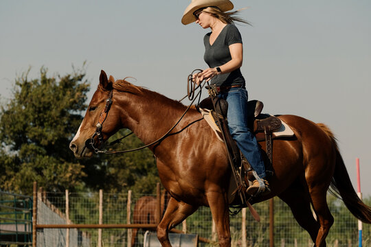

A complete horse training & boarding facility.
is a full service training and boarding facility, located just 20 miles east of Cincinnati in Amelia, Ohio. Whether you show competitively, trail ride, or just need a comfortable safe place for your horse to retire, you and your horse will love it here.
- Ride year round, regardless of the weather, in our indoor arena.
- Enjoy easy access to miles of trails at East Fork State Park.
- We offer several board and training packages to fit a variety of needs and budgets.
1252 Green Pasture Rd
Amelia, Ohio 45102
888-555-0751